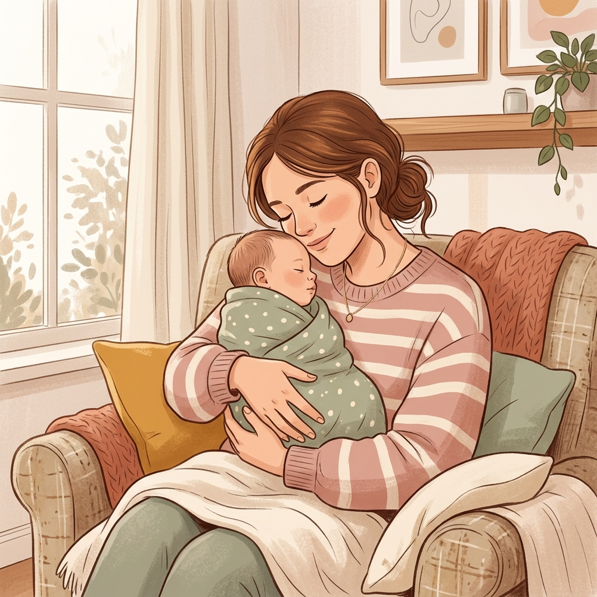
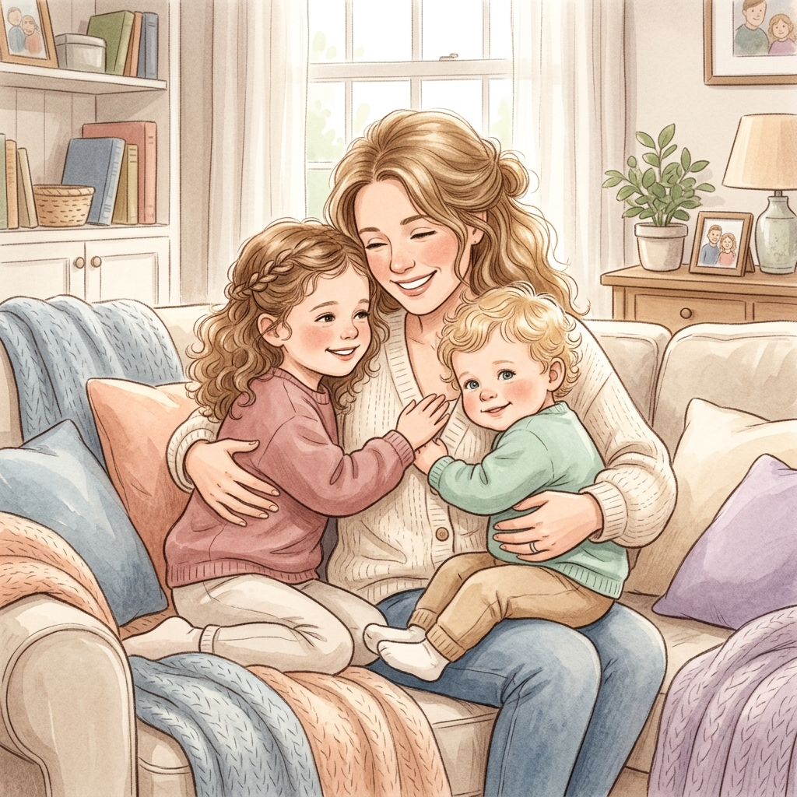

Giáo sư Shichida Makoto — Chương III: Khó Khăn Khi Dạy Lễ Nghĩa Cho Trẻ

Thời gian đọc ước tính: ~25 phút (6,200 từ) |
Độ khó: Khá cao (Đòi hỏi sự thấu hiểu tâm lý trẻ và kỷ luật tự thân của cha mẹ)
Khái niệm cốt lõi: Sức khỏe tâm hồn sơ sinh · Phản xạ khóc đòi bú · Gắn bó da kề da & Hội chứng bám dính · Thoái lui tâm lý (Sibling Regression) · Đường cong nghiêm khắc (Nhật vs Mỹ) · 4 Sai lầm giáo dục · 3 Trụ cột lễ nghĩa · Trị liệu bằng khen ngợi

Tóm tắt một câu: Sự hình thành nhân cách đạo đức và kỷ luật tự giác của trẻ từ 0-3 tuổi bắt nguồn từ mối liên kết tình cảm vững chắc giữa cha mẹ và con cái, được củng cố bằng phương pháp rèn luyện ý chí nghiêm khắc và sự khen ngợi tích cực. Ch 3, p. 57, 61, 69
Bối cảnh đặt ra (The Setup): Sự bất ổn tâm sinh lý ở tuổi trưởng thành thường bắt nguồn từ những tổn thương trong mối quan hệ với cha mẹ ở giai đoạn 1-3 tuổi. Việc nuông chiều vô điều kiện hoặc áp đặt kỷ luật quá muộn sau 3 tuổi đều dẫn đến các hành vi lệch chuẩn, bất tuân ở trẻ. Ch 3, p. 57, 61
Luận điểm cốt lõi (The Argument): Giáo dục lễ nghĩa thực chất là giáo dục ý chí để giúp trẻ kìm nén cảm xúc cá nhân. Quá trình này cần đi theo một đường cong nghiêm khắc: thắt chặt nghiêm khắc từ 0-3 tuổi và nới lỏng dần khi trẻ lớn lên, đối lập hoàn toàn với cách nuôi dạy sai lầm "nuông chiều thuở nhỏ, khắt khe khi lớn". Ch 3, p. 61-62
Bằng chứng & Minh họa (The Evidence): Tác giả dẫn chứng học thuyết của giáo sư Sugita Mineyasu, trường hợp cậu bé Akihiro thi trượt đại học 4 lần để báo thù người mẹ đi làm xa từ bé, hiện tượng thoái lui của anh chị khi có em (tè dầm, đánh em), và trường hợp bé X cải tạo hành vi trộm cắp siêu thị nhờ được khen ngợi điểm tốt. Ch 3, p. 57-60, 69
Hệ quả thực tế (The Implications): Cha mẹ cần xây dựng lòng tin cơ bản trước 8 tháng tuổi, tránh cho bú theo giờ hay xa lánh trẻ. Từ 1-3 tuổi, rèn luyện 3 nhóm lễ nghĩa (cơ bản, tinh thần, xã hội & đạo đức) bằng cách để trẻ tự lập (tự ăn, tự mặc) và tuyệt đối không can thiệp khi trẻ cãi nhau với bạn. Ch 3, p. 59, 65, 68
Điểm gây tranh luận (The Controversy): Quan điểm "Đường cong nghiêm khắc từ sơ sinh đến 3 tuổi" đòi hỏi sự khắt khe cao độ ngay từ nhỏ, dễ bị hiểu nhầm thành bạo hành tinh thần nếu cha mẹ thiếu sự thấu hiểu, đồng thời lý thuyết "cho bú theo giờ làm tổn hại cảm nhận cơ thể" cũng đi ngược lại với một số trường phái y khoa phương Tây khuyến khích ăn ngủ theo cữ (E.A.S.Y). Ch 3, p. 58, 61-62
Mối liên hệ hệ thống (The Connection): Chương này chuyển hóa năng lực trí tuệ và sáng tạo (đã phân tích ở Chương I & II) thành năng lực thực tiễn: hành vi xã hội, ý chí kiên định và đạo đức. Đây là mảnh ghép cuối cùng hoàn thiện một đứa trẻ phát triển toàn diện cả về Thể chất, Trí lực và Tâm hồn. Ch 3, p. 56
Đối với trẻ nhỏ, ý chí mạnh mẽ không có nghĩa là sự bướng bỉnh, ích kỷ bám lấy đòi hỏi cá nhân. Ngược lại, đó là năng lực tự chủ tinh thần để:
Thói quen nhẫn nhịn và ý chí tự chủ của trẻ phải được xây dựng vững chắc trước 3 tuổi:
Trong tác phẩm "Hoa cúc và lưỡi dao", nhà nhân học Ruth Benedict chỉ ra sự khác biệt trái ngược giữa hai đường cong nghiêm khắc:
Khuyến nghị của Shichida: Trẻ cần được dạy bảo nghiêm khắc 6 năm đầu đời để tạo khả năng tự khích lệ bản thân, tránh trượt chân vào lối sống vô trách nhiệm khi lớn. Ch 3, p. 62
Cơ chế: Cha mẹ đáp ứng mọi đòi hỏi vô điều kiện. Sự nuông chiều không giải phóng tự do của trẻ mà chỉ làm bùng phát thêm các yêu sách vô tận. Ch 3, p. 62
Hậu quả: Trẻ thiếu khả năng chịu đựng, dễ giận dữ, bất mãn dữ dội khi nhu cầu không được đáp ứng tức thì. Ch 3, p. 62
Cơ chế: Không nhìn nhận trẻ, cằn nhằn, mắng mỏ liên tục. Thống kê có những bà mẹ dành tới 80% - 90% lời nói hàng ngày để cằn nhằn con. Ch 3, p. 63
Hậu quả: Đánh mất tố chất thiên bẩm, làm lệch lạc tình cảm và thúc đẩy trẻ đi vào con đường phản kháng, phạm tội. Ch 3, p. 63
Cơ chế: Đặt áp lực học tập vượt quá khả năng thực tế của trẻ mà không dạy bằng trò chơi hay kiên nhẫn. Cha mẹ mặc định "cái này ai chẳng làm được". Ch 3, p. 63
Hậu quả: Trẻ rơi vào cảm giác kém cỏi như sống dưới địa ngục, phản ứng mãnh liệt, chán ghét học tập, tự hại. Ch 3, p. 63
Cơ chế: Cha mẹ bao bọc làm thay toàn bộ các việc trẻ định tự làm (ăn, mặc, vệ sinh). Quá chú trọng dạy chữ mà bỏ quên dạy kỹ năng tự phục vụ. Ch 3, p. 63-64
Hậu quả: Ức chế năng lực tự giác vĩnh viễn, trẻ chậm cai sữa tinh thần, khôn nhà dại chợ, ích kỷ, thiếu tính xã hội. Ch 3, p. 63-64
Cột mốc: Trẻ đầy năm tự cầm thìa ngồi ăn chung bàn với cả gia đình. Ch 3, p. 65
Bí quyết nuôi dạy: Chấp nhận cơm vung vãi bừa bộn. Tuyệt đối không giật thìa bón hộ chỉ vì sợ bẩn. Ch 3, p. 65
Cơ chế tự sửa: Làm vãi nhiều lần, não bộ trẻ sẽ tự căn chỉnh cơ tay để đưa thức ăn chính xác vào miệng. Đây là bước đầu của tự giác và ý chí. Ch 3, p. 65
Cột mốc: Bắt đầu tập ngồi bô tự chủ từ 2 tuổi. Tránh ép sớm ở 1 tuổi rưỡi. Ch 3, p. 65
Bí quyết nuôi dạy: Không nôn nóng bắt ép. Khi trẻ tè dầm, phải thay quần/bỉm sạch sẽ càng nhanh càng tốt. Ch 3, p. 65
Cơ chế tự sửa: Thay nhanh giúp trẻ khắc ghi cảm giác khô thoáng thoải mái và ghét cảm giác ẩm ướt khó chịu. Nếu để ướt lâu, trẻ quen bẩn và mất ý thức vệ sinh. Ch 3, p. 65-66
Cột mốc: 3 tuổi tự mặc quần, cài cúc áo dù chậm chạp, vụng về. Ch 3, p. 66
Bí quyết nuôi dạy: Nếu con xỏ 2 chân vào một ống quần, cha mẹ cần im lặng quan sát, không can thiệp. Ch 3, p. 66
Cơ chế tự sửa: Trẻ nhận ra không đi lại được sẽ tự rút chân ra, loay hoay mặc đi mặc lại cho đến khi mặc đúng. Làm hộ sẽ ức chế năng lực phát triển của trẻ. Ch 3, p. 66
Giáo sư Shichida nhấn mạnh ranh giới rõ ràng về việc mắng con để tránh làm tổn hại lòng tự tin và tâm hồn trẻ:
Ích kỷ · Bắt nạt bạn bè · Dối trá đổ tội · Phản kháng nói láo bố mẹ. Ch 3, p. 67-68
Trẻ làm vỡ đồ, chạy nhảy ầm ĩ nghịch ngợm trong nhà. Tấm lòng trẻ không xấu, đó chỉ là tai nạn vô ý hoặc hiếu động tự nhiên. Ch 3, p. 68
Cơ chế: Gắn liền trách nhiệm với sự tự giác cá nhân. Hãy dạy trẻ thói quen tự thu dọn đồ chơi sau khi chơi xong. Ch 3, p. 68
Hệ quả: Thói quen tự làm việc của mình giúp trẻ lớn lên trở thành con người biết chịu trách nhiệm về mọi hành vi của mình. Ch 3, p. 68
Bản năng 3 tuổi: Trẻ 3 tuổi luôn tò mò và rất thích giúp mẹ làm việc nhà (quét nhà, lau bàn). Ch 3, p. 68
Bí quyết nuôi dạy: Chấp nhận sự vụng về của trẻ và nói lời cảm ơn vì đã giúp mẹ. Ch 3, p. 68
Sai lầm chí tử: Chê bai kết quả lao động của con: "Xấu quá đấy, mẹ lại phải làm lại lần nữa rồi". Câu chê bai này lập tức tiêu hủy hoàn toàn ý chí giúp đỡ và tinh thần lao động của trẻ. Ch 3, p. 68
Sự ích kỷ tuổi lên 3: Việc trẻ tranh giành đồ chơi là phát triển tâm lý bình thường. Ch 3, p. 68
Nguyên tắc thép: Khi trẻ em cãi nhau, người lớn/cha mẹ tuyệt đối KHÔNG ĐƯỢC CAN THIỆP. Ch 3, p. 68
Bài học tự nhiên: Tự cọ xát với bạn bè giúp trẻ hiểu ích kỷ sẽ gây cãi cọ, không chơi được tiếp. Từ đó, trẻ tự học cách thỏa hiệp và điều chỉnh hành vi xã hội mà không ỷ lại cha mẹ. Ch 3, p. 68
Giáo dục lễ nghĩa thực chất là rèn luyện ý chí tự chủ của trẻ trước 3 tuổi, dựa trên nền tảng gắn kết tình cảm mẹ con vững chắc từ sơ sinh. Lễ nghĩa cần được rèn luyện toàn diện ở 3 mặt: Cơ bản (ăn uống, vệ sinh, mặc đồ), Tinh thần (kỷ luật khi ích kỷ, bắt nạt, nói dối, phản kháng) và Xã hội/Đạo đức. Ch 3, p. 57, 61, 65, 67-68
Mạch tư duy của Shichida đi từ tâm sinh lý gắn bó sơ sinh (0-1 tuổi) → Cơ sở lý thuyết ý chí và kỷ luật nghiêm khắc (1-3 tuổi) → Các nguyên nhân gây sai lệch hành vi → Phân nhóm 3 hệ thống lễ nghĩa → Đúc kết giải pháp thực hành bằng nghệ thuật khen ngợi và làm gương. Ch 3, p. 57, 61, 65, 69
Bối cảnh Nhật Bản nửa sau thế kỷ 20 với trào lưu đô thị hóa, cả hai vợ chồng cùng đi làm khiến trẻ nhỏ bị gửi đi sớm (2 tháng tuổi). Đồng thời, nền giáo dục truyền thống Nhật Bản vốn nuông chiều trẻ nhỏ vô điều kiện ("thiên đường em bé") và thiếu kỷ luật khoa học đầu đời dẫn tới sự phản kháng hành vi. Ch 3, p. 58, 61
Đúng: Chỉ ra mối liên hệ sâu sắc giữa chấn thương xa cách mẹ thuở nhỏ với sự nổi loạn ở tuổi lớn (Akihiro). Tôn trọng tính tự giác tự lập sinh hoạt (không bón cơm, để mặc ngược tự sửa). Ch 3, p. 58, 65-66
Hạn chế: Đòi hỏi sự nghiêm khắc cao độ ngay từ nhỏ dễ biến tướng thành bạo lực nếu thiếu đồng cảm. Một số dẫn chứng (như lớp tiểu học không ai rửa mặt) mang tính chủ quan cảm tính, chưa có kiểm chứng thống kê quy mô rộng. Ch 3, p. 61, 66
Thiết kế mô hình "Kỷ luật tích cực dựa trên sự gắn bó (Attachment-Based Positive Discipline)": Kết hợp chặt chẽ việc đáp ứng yêu thương xúc giác thời kỳ sơ sinh (0-1 tuổi) với việc đặt giới hạn hành vi rõ ràng (1-3 tuổi) nhưng không dùng hình phạt thể xác hay mắng mỏ cằn nhằn. Thay vào đó, áp dụng nghệ thuật khen ngợi điểm tốt và thiết lập các "môi trường tự lập an toàn" để trẻ tự do sửa sai. Ch 3, p. 60, 65, 69
"Đường cong nghiêm khắc thế này thì tốt. Từ khi sơ sinh tới khi 3 tuổi, phải hết sức thắt chặt, nghiêm khắc. Từ 3 tới 6 tuổi thì nới lỏng hơn 1 chút. Từ 6 đến 9 tuổi nới lỏng hơn chút nữa, để sau đó trở đi, cha mẹ có thể dạy dỗ con bằng cách nói chuyện thẳng thắn."
— Giáo sư Shichida Makoto, đề xuất nguyên tắc thiết lập kỷ luật và rèn luyện ý chí cho trẻ từ sơ sinh. Ch 3, p. 62
"Bí quyết để con bạn trở thành một người con sáng lạn, giàu năng lực, đó là việc nhìn nhận và khích lệ con trẻ. Bí quyết dạy con, bí quyết giáo dục con là ở đây."
— Giáo sư Shichida Makoto, đúc kết triết lý cải tạo hành vi phản kháng của trẻ nhỏ. Ch 3, p. 69